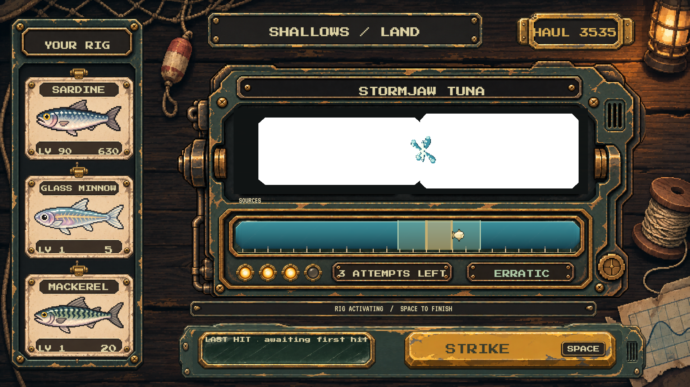
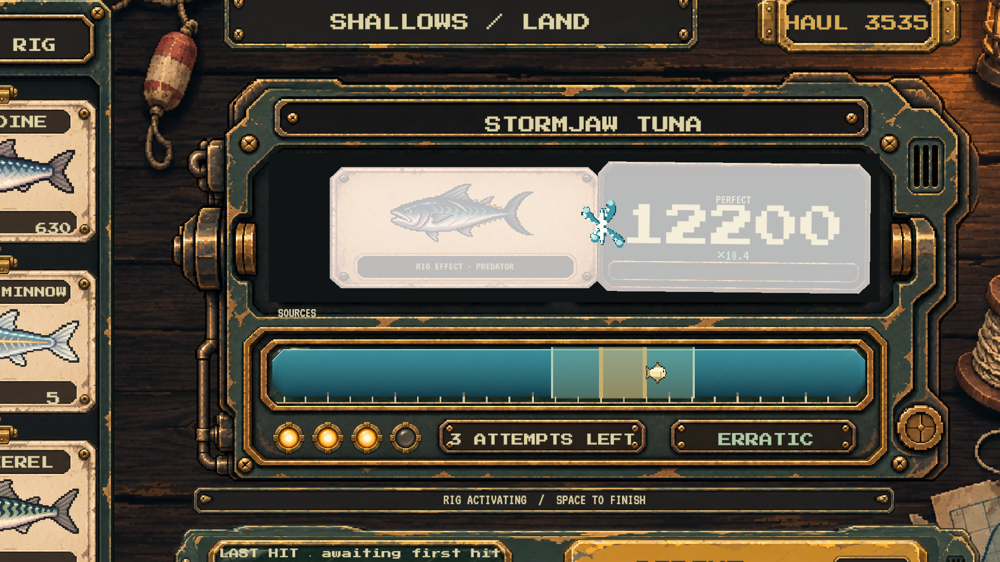
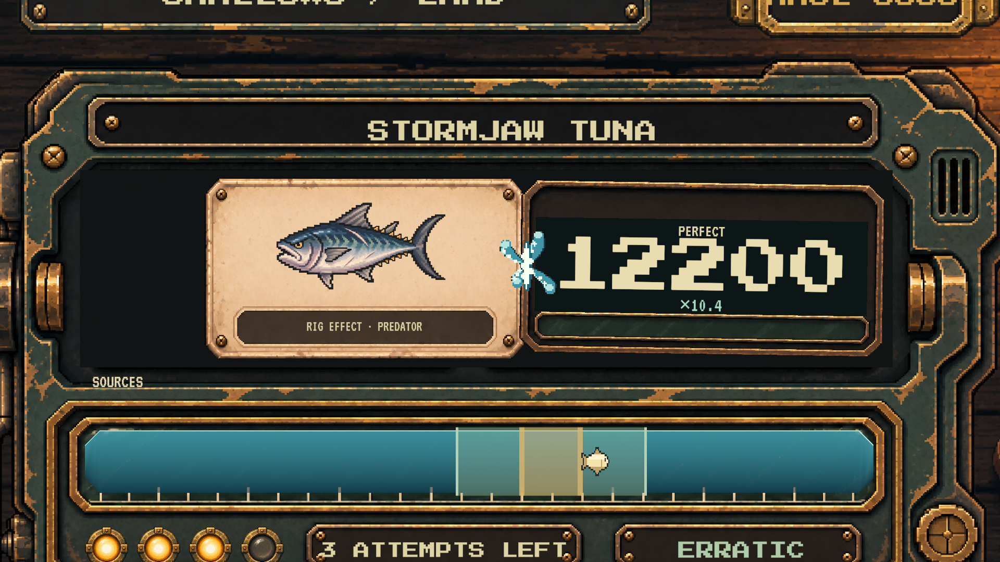

White impact flash
Both cards flash white at contact, then clear within 55 milliseconds. The final hit keeps its slow approach and close-up, while the flash stays brief.
Normal playback shows the actual in-game timing. Quarter speed is for inspecting the flash.
Inspect the contact frames

Contact — white peak

25 ms — fading

56 ms — fully clear
316 native Unity frames at 60 fps, with audio from the runtime cue schedule. Implementation and checks · Open the video directly.